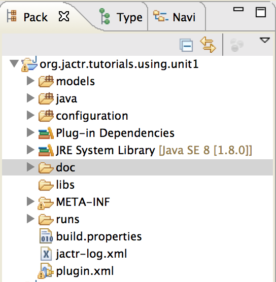
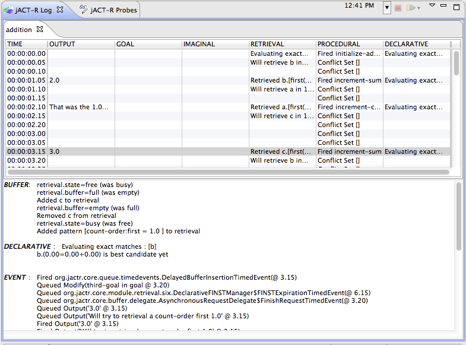
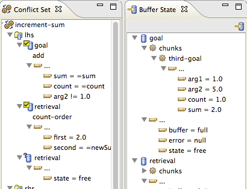
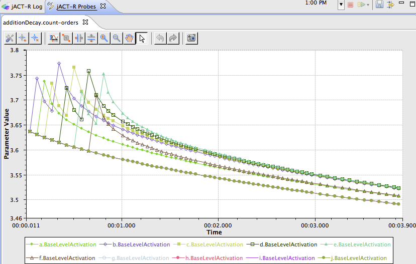
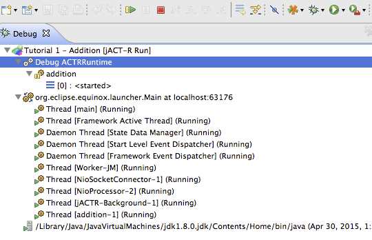
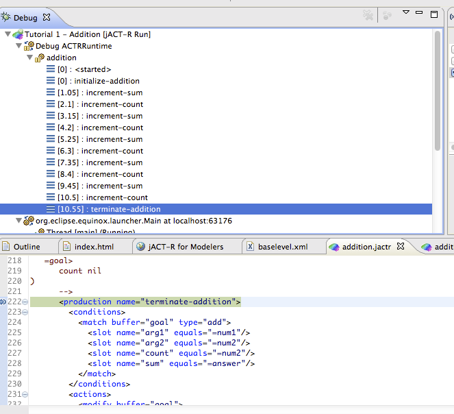

This is quick tutorial intended for knowledgable modelers to introduce them to the jACT-R side of things. This will not cover how to build models, rather how projects are set up, models executed, and tools used. Nor will this be an introduction to the jACT-R xml syntax. It is verbose, and you'll pick it up quick. Besides, a new, cleaner and more concise syntax is forthcoming.
In order to maintain executability across different environments and platforms, jACT-R relies upon a strict project layout (derived from OSGi/Java best practices). The first element to consider is project naming. Java convention is to use reverse url to allow back-tracking to a projects source. You need only do this if you want to release your models or code.

Open up the model file models/org.jactr.tutorials.using.unit1/addition.jactr. Take some time to read through this model file. It is liberally commented, highlighting some of the editor's cababilities and explaining the layout of the model file.
This is the original Lisp tutorial unit 1 addition model. The original lisp is in the comments. Feel free to poke around. Try out the editor navigation, code integration, and content completion. The Eclipse editor tools also support a wealth of existing, common tools like: compare, revert, local history, source revision integration, bookmarking, and tagging.
Once you have a model, you need to set up the environment in which it will actually run. This includes things like what types of interfaces will it be hooked up to, what instruments will be analyzing the model, what information should be sent back to the IDE, etc. All of this is saved in a run configuration.
First, through the menu, go to Run-Run Configurations.... In the dialog that popped up, you select "Tutorial 1 - Addition Probes" under the jACT-R Run listing on the left.
The main tab allows you to specify which project you are working with and then select the model you'd like to run (check box). The aliases to the right of the model selection allows you to instantiate multiple copies of the model at one time, each with a unique name.
Instruments are pieces of code that can be attached to a model to passively monitor it. They are not meant to change behavior at all. In this circumstance, we are using the ModelRecorder. This tool generates code for the model at the start and stop of a model run.
CommonReality is the interfacing middleware that jACT-R uses to interface arbitrary or simulated devices. These are generally contributed by experiment builders. If your model makes use of any of the perceptual modules, there must be at least on CommonReality sensor configured.
At times is can be necessary to specify some bootstrap code. The start/stop runnables are instances of java.lang.Runnable that will be executed just before the models start running, and immediately after the last one finishes. This is useful for setup and cleanup processes.
This tab controls what information is reported back to the IDE by the runtime. Each tracer provides a description of what it does. You can also choose to direct that information to the IDE, to file (for playback), or both. Finally, you can optionally turn on the runtime's debug tracing (developers only).
As you can see, the run configuration encapsulates all the basics required to run the model. Why don't you click on Run, and let's see what happens.
The IDE should have asked you to switch perspectives to the JACT-R run perspective. This layout is designed specifically for examining model runs. The most obvious component is the log viewer:
The log viewer is segmented into rows by model time, and columns by the log stream. The drop-down menu in the upper right allows you to filter which streams you are interested in seeing. Selecting a row will then display all the log messages for that cycle in the lower text region. You may notice that as you select time rows, other elements of the IDE are updated automatically. (check preferences for options)
For each recorded cycle, the tracers also provide the cycle's conflict set as well as all the buffer contents. These views are linked to the selection in the log viewer.
Every model run occurs in its own date and timestamp folder under runs/. If you look there now you will see your run's folder. Inside of it is all the data that was generated. In this case it's just start/stop folders which contain the full versions of your model before and after the run. These were generated by the Model Recorder instrument enabled on the Instruments tab.
Why not modify the current run configuration so that it runs multiple instances of the addition model?
Now that you've been exposed to the basic tools, we're going to introduce some more advanced usages and additional tools.
This time, run the launch configuration Tutorial 1 - Addition Probes. This run configuration includes the ProbeViewer in the Tracing/Logging portion (configured by configuration/org.jactr.tutorials.using.unit1/baselevel.xml), the model is slightly modified to include a declarative learning module. If you look at the Probes tab, you'll see the baselevel activations plotted over time.
The probe view can be configured to listen to numeric parameter values of almost anything in the model: model, chunktypes, chunks, productions, links, buffers, modules, and extensions. More information on using the probe viewer can be found here and here. (check preferences for additional options)
A useful trick is to include a probe that attaches to the retrieval module, listening to the retrieval threshold parameter. This gives you a clear threshold line to compare activations against.
All of the tracing data that is sent to the IDE can also be sent to file. This allows you to playback the model run at a later time. This can be really useful for sharing unusual behavior or documenting canonical behavior. Tracing in the IDE can also be (relatively) slow, particularly for highlighly complex or long running models. In this case, it is often desirable to send only to file and playback later. The performance benefits can be significant.
If you select to send events to file, you will see a new folder (sessionData) in that run's folder. Right clicking on sessionData will give you the option for jACT-R-Playback. This will throw you back the run perspective, with the first 30s played back.
You can advance the playback using the green play arrow (and it's drop-down menu). Because it is often necessary to playback long timespans just to reach what you are looking for, the probe viewer with actually skip long time spans, making sure to always playback at least 30s before your desired time window.
The jACT-R IDE has support for traditional breakpoints, specifically production breakpoints. If you switch over the Debug perspective, find a production in the editor and hit Ctrl/Cmd-Shift-B, you'll mark that production as a breakpoint. Mark terminate-addition as a breakpoint in the addition model. If you then launch the model via debug (Debug configuration is the same as a run configuration, just in debug mode), you will be in the debugging mode. However, anytime you debug a model, it starts in a suspended state. Just click the play button to resume.
Once running it will halt once it reaches the terminate-addition. You can use the step-over, step-resume, resume tools as you'd expect. If you've got the log, confict set, or buffer views in the debug layout, you'll be able to see them update as the model hits the breakpoints.
If you've been running all of these examples, you probably have a log view with dozens of tabs. It is important to remove any traces when you are done, they consume massive amounts of memory. When you're done, click the red X in the tab and that will free up that data.
As you start to accumulate lots of projects, it is often best practice to close any projects that you are not actively working on. A closed project has no influence on the workspace, but an open one is automatically included when you run models.